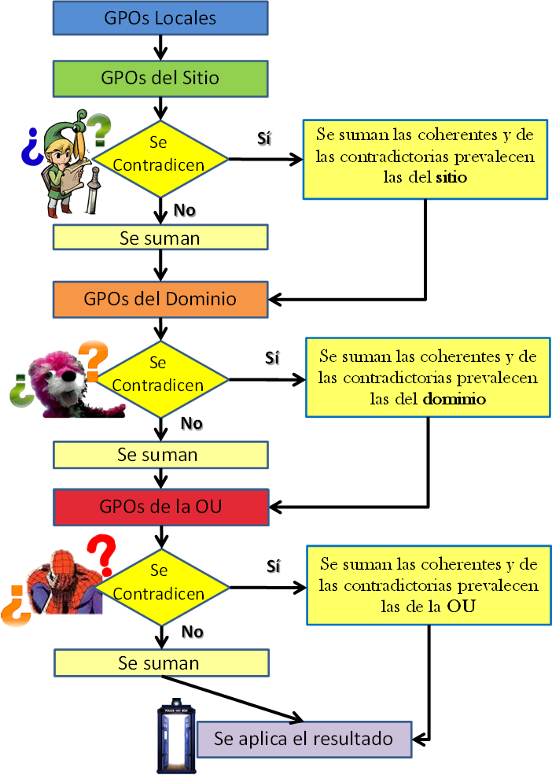

Directivas de grupo
Las Directivas de Grupo es una funcionalidad que mediante un conjunto de reglas nos permite controlar todo el entorno de trabajo de las cuentas de los usuarios y de equipos. De una manera totalmente centralizada se puede gestinar de esta manera que acciones podrá realizar el usuario en el sistema.
Las GPO se pueden diferenciar dependiendo del objeto al que configuran y se pueden entender en distintos niveles:
- Equipo Local: tan solo se aplican en el equipo que las tiene asignadas independientemente del dominio al que pertenezca.
- Sitio: se aplican a los equipos y/o usuarios de un sitio, independientemente del dominio.
- Dominio: se aplican a todos los equipos y/o usuarios de un dominio.
- Unidad Organizativa: se aplican únicamente a los equipos y/o usuarios que pertenecen a la OU.
Un usuario, estará en un equipo local que a su vez se ubica en un sitio, y este sitio pertenecerá a un dominio que será miembro de una OU. Se puede dar la situación en la que en un equipo local se aplique una GPO, en el sitio otra, y en el dominio y la OU otras, respectivamente. Cuando se den casos así, las políticas se aplicarán según unas prioridades que atienden a una serie de reglas.
En las GPO, las políticas asignadas a una OU prevalecen sobre las del dominio, que a su vez prevalecen sobre las del sitio y estas, sobre las del equipo local. Esto no quiere decir que las políticas se anulen unas a otras, sino que siempre se suman y tan solo se anulan en caso de contradecirse entre ellas.
